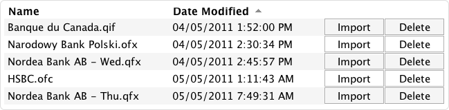

Import List
Import List is an open-source extension for Moneydance®
monitoring a given directory for transaction files to import.
Rationale
Personal finance manager Moneydance® offers a feature to import transaction files, such as from Quicken™. Using third-party background applications to download transaction files on a regular basis I felt that Moneydance® lacks an overview of which files still have to be imported, which, in turn, forces the user to constantly check on the file system.
As a result, this extension monitors a given base directory and displays all of its transaction files in a sortable list inside the homepage view along with two corresponding buttons to import and to delete each transaction file.
Screenshots
Click on an image to view it at full size.


Features
-
Integration: Import and delete transaction files seamlessly from the homepage view.
-
Synchronization: Changes in the base directory are reflected in the list.
-
Efficient filters: The list displays only QIF, QFX, OFX, and OFC transaction files.
-
Security: The extension is audited and signed with the official Moneydance® key.
Requirements
- Moneydance® 2006, 2007, 2008, 2010, or 2011
- Java Runtime Environment, version 6
Download
Installation
- Add the extension to Moneydance® by choosing Add… or Manage Extensions… from the Extensions menu (depending on which version of Moneydance® you use).
- You will be asked to choose a base directory to monitor (you can always change that one later).
- In order to display Import List in Moneydance®'s homepage view, open the Preferences window and click on the Home Page tab. The available items should contain an entry called Import List. Add it to the left or right column of your homepage view.
License
Copyright 2011 Florian J. Breunig.
Import List is released under the GNU General Public License, Version 3.0.


{kind=link}